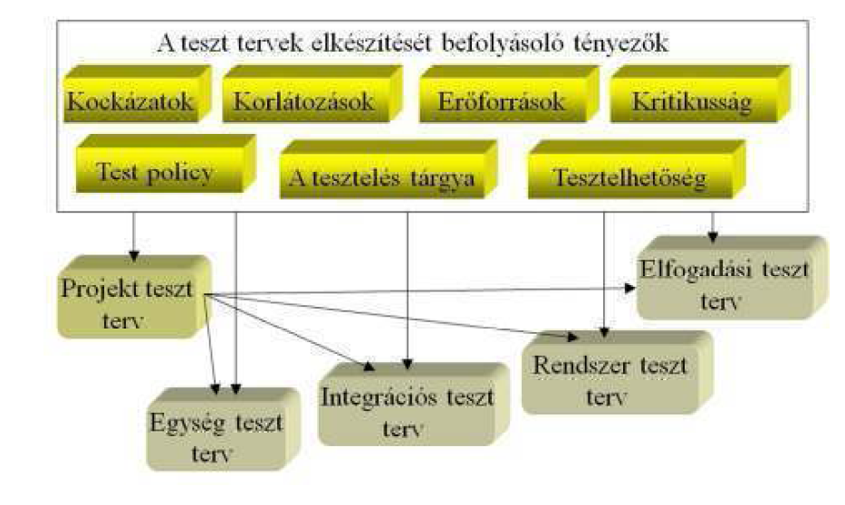

A teszt terv az elv√©gzendő tesztel√©si munka projektterve, nem pedig műszaki teszt terv specifik√°ci√≥ vagy tesztesetek gyűjtem√©nye. A teszt terv a teszt menete folyam√°n v√°ltozik, megjegyz√©sekkel bőv√ºlhet, √≠gy v√°lik lassan a projektcsapat megbesz√©l√©seit, egyeztet√©seit r√∂gz√≠tő napl√≥v√°.
A teszt tervek k√ºl√∂nb√∂ző szintjeit √©s a tervek elk√©sz√≠t√©s√©t befoly√°sol√≥ t√©nyezőket foglalja √∂ssze az al√°bbi √°bra:

8. √°bra Teszt tervek
Ha teszt tervet k√©sz√≠t√ºnk, √©rdemes sablont haszn√°lnunk, √≠gy nehezebben felejt√ºnk ki kritikus pontokat. Haszn√°lhat√≥ az IEEE 829-es sablon. Ezen sablon alapj√°n egy teszttervnek a k√∂vetkezőket kell tartalmaznia:
Tesztterv azonosító
Bevezető
Tesztegységek
A tesztelés tárgyának a meghatározása. Tartalmazhat hivatkozásokat más dokumentációkra, például rendszer tervekre.
Tesztelendő funkci√≥k
A tesztelés céljának meghatározása (funkciók, nem funkcionális követelmények).
Nem tesztelendő funkci√≥k
Olyan követelmények, amelyeket nem szükséges, vagy nem lehetséges tesztelni.
Szemléletmód
A tesztelés módszerének leírása. Hivatkozhat más dokumentumra, például a tesztelési stratégia leírására.
Elem helységének / hibájának feltétele
Annak a felt√©telnek a specifik√°ci√≥ja, aminek alapj√°n eld√∂nthető, hogy egy rendszer elem megfelel-e a teszt krit√©riumoknak.
Felfüggesztési / újrakezdési feltételek
A teszt felfüggesztésének és újrakezdésének kritériumai.
átadandó tesztkimenetek
Azok a dokumentumok, amelyek a tesztelési tevékenység eredményeit tartalmazzák. Például:
teszt tervek,
teszt specifikációk az egyes tesztelési szintekhez,
teszt futtas√°sok jegyzők√∂nyvei.
Tesztfeladatok
A tesz tervezéshez és végrehajtáshoz szükséges tevékenységek összefoglalása.
Környezeti igények
A tesztek végrehajtásához szükséges hardver és szoftver környezet specifikációja.
Felelőss√©gek
A tesztelési tevékenységhez szükséges szerepkörök és azok feladatainak leírása.
Személyzeti és képzési igények
A tesztelési tevékenységhez szükséges szakemberek és azok szükséges szakértelmének meghatározása
‹temterv
A tesztel√©si tev√©kenys√©g √ºtemterve, a meghat√°rozott hat√°ridőkre v√©grehajtand√≥ tev√©kenys√©gek √©s elk√©sz√≠tendő dokumentumok meghat√°roz√°sa.
Kock√°zatok √©s előre nem l√°that√≥ esem√©nyek
Az előre megbecs√ºlhető kock√°zatok √©s azok elker√ºl√©s√©nek / minimaliz√°l√°s√°nak terve
Jóváhagyások
Annak meghat√°roz√°sa, hogy ki jogosult a dokumentumok elfogad√°s√°ra.
A tesztterv √≠r√°s√°nak c√©lja, hogy v√©giggondoljuk a teszt menet√©t, hisz amit v√©giggondolva k√©pesek vagyunk sz√≥ba foglalni, azt √©rtj√ºk is. Egy j√≥ tesztterv r√∂vid √©s l√©nyegre t√∂rő, √≠gy meg√≠r√°sa nem egyszerű feladat. Magas szinten √°t kell gondolnunk a tesztel√©si munka c√©lj√°t. Ehhez meg kell hat√°roznunk, hogy mi tartozik az adott teszthez, √©s mi nem, meg kell √©rten√ºnk a term√©kkock√°zatokat √©s ismern√ºnk kell a teszttel√©s lehets√©ges korl√°tait (p√©ld√°ul anyagi vagy időkorl√°t). Ezek ut√°n fel kell osztanunk a feladatokat, a tesztel√©s k√ºl√∂nb√∂ző szintjeire. Ezut√°n egyeztetn√ºnk kell a szintek k√∂zti √°tmeneteket, majd meghat√°roznunk, hogy mely inform√°ci√≥kat kell √°tadnunk a teszt v√©g√©n a karbantart√≥ csapatnak. Ehhez meg kell hat√°roznunk, hogy milyen √°ll√≠t√°sok lenn√©nek igazak egy olyan projektre, amin sikeresen elv√©gezt√©k a tesztel√©st, azaz specifik√°lnunk kell minden teszt eset√©n annak bel√©p√©si √©s kil√©p√©si felt√©teleit.